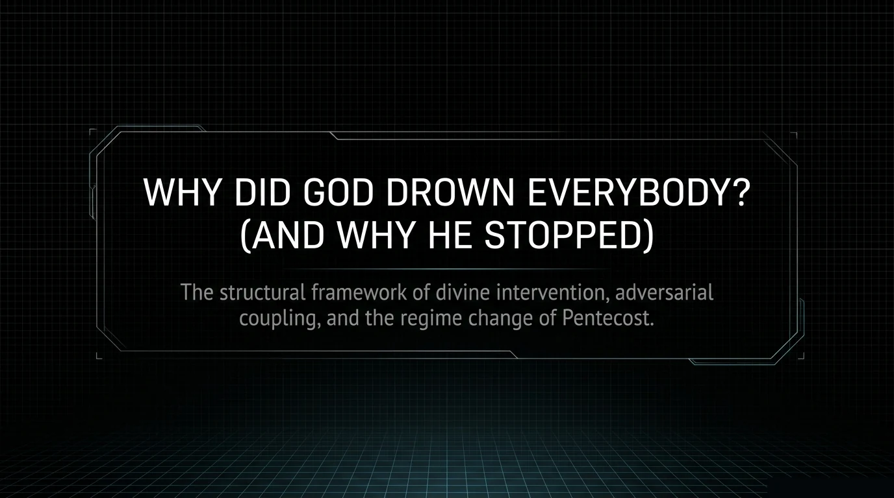
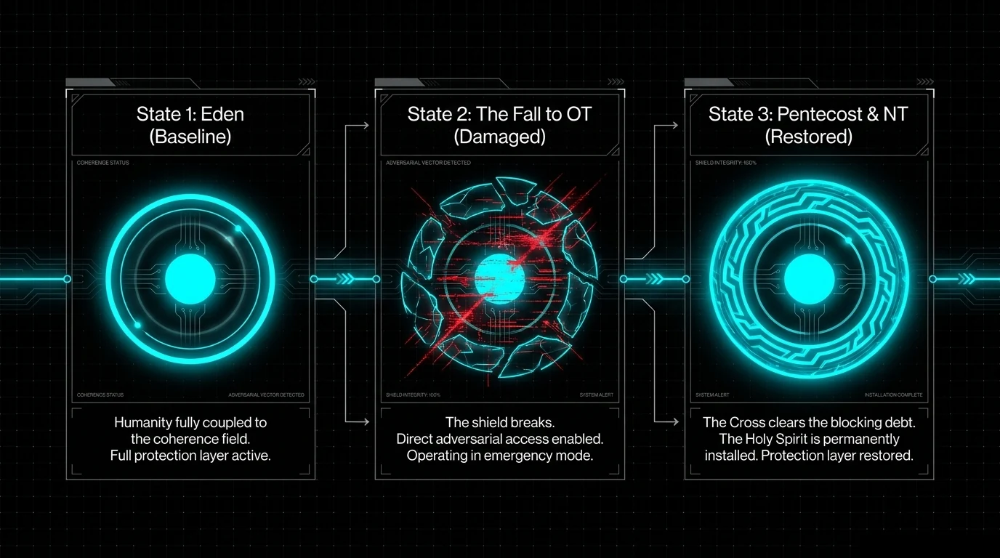
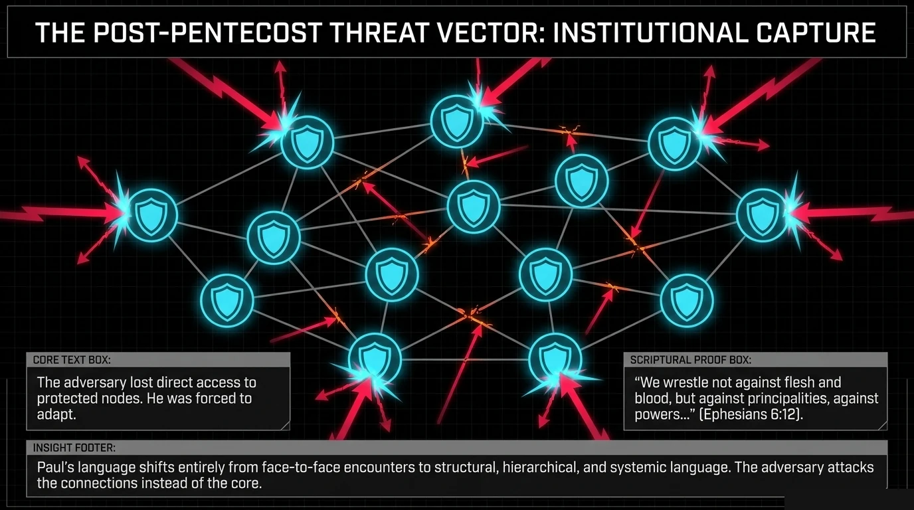
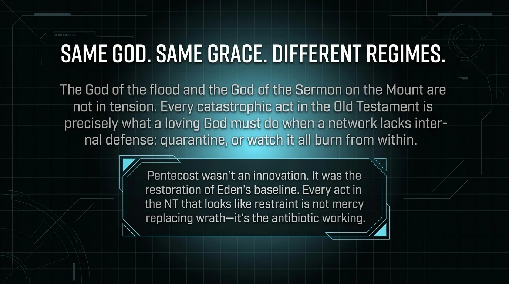

Same God, both testaments. The Old Testament God who floods the earth and the New Testament God who dies on a cross are the same Being, operating in different regimes of the same equation. We are not softening the Old Testament. We are showing that the math requires both modes.
This is the article I have been most afraid to write. Not because the answer is unclear — the answer has been sitting in plain view for sixteen centuries. I have been afraid because the question is one of the most painful in Christianity, and most of the answers people give to it have made the pain worse. I am not going to tell you the hard passages are not hard. They are hard. I am going to do something else first. I am going to take you to 1400 BC and make you stand in the dirt for a few minutes, because every honest answer to the OT/NT problem has to start there. Every dishonest one starts in 2026 and reasons backward.

The Dirt
1400 BC — The Southern Levant
It is late afternoon in the southern Levant.
The air smells like woodsmoke and sun-baked mud and, faintly, the metallic tang of blood from the morning's animal slaughter. You are standing on a footpath outside a walled village. There is no police station. There are no courts. There is no hospital. There is no hospital because there are no doctors, and there are no doctors because there is no germ theory and no antibiotics and no anesthesia and the closest thing to a medical professional in your village is the woman who knows which herbs to chew and which to spit out.
You are not from here. You came from the future. You are wearing the Western armchair you carried with you, and from inside that armchair you have always wondered why the God of the Old Testament was so harsh. You are about to find out that you were asking the wrong question.
Walk with me.
The man beside you has two wives. This is not a lifestyle choice. His first wife has borne three children and buried two of them before their second year. The third child, a boy, survived but walks with a limp from a fever that nearly killed him at four. The man's second wife is not a romantic addition — she is an economic unit. Two wives means twice the labor in the fields, twice the chance of a surviving heir, and a margin of redundancy against the 48.8% probability that any child born in this village will die before the age of fifteen. You think polygamy is a moral failure. In 1400 BC it is an actuarial calculation.
The village you are walking through has no central authority. The nearest thing to a government is the elder at the gate, and his jurisdiction ends at the wall. Beyond the wall, you are in clan territory. If a man from one clan kills a man from another, the dead man's brother is now the goel ha-dam, the Blood Redeemer, and he is obligated to kill the killer. Not as an option. As a duty. If the killer cannot be found, any male from his clan will do. This is not barbarism. This is the only justice system available in a world without courts, without police, without prisons, without any mechanism for impartial adjudication.
The woman who just passed you on the path — the one carrying the water jar on her head — has buried four of her six children. Her surviving son is eleven and already learning to use a sling. Her surviving daughter is nine and already spoken for. The marriage was arranged when the daughter was six, because a girl who is not betrothed by age ten in this world is a girl whose family has not secured an alliance, and a family without alliances is a family that is one bad harvest from extinction.
Do you hear the drums in the next valley? That is not a festival. That is a religious ceremony at the local bamah — the high place — where the Canaanite priests serve the Ba'als. The drums are not decorative. They serve a specific function that Plutarch will describe a millennium later when Phoenician colonists carry this same religion to Carthage: the drums drown out the screams of the children being placed on the bronze arms of the idol and rolled into the fire pit beneath. The drums exist so the parents will not hear their children scream and change their minds.
This is the world the Mosaic Law was written for. This is the world God entered when He gave the commandments at Sinai. Not a world of philosophy seminars and ethics committees and peer-reviewed journals. A world of blood feuds and infant mortality and parasitic disease and child sacrifice and a life expectancy at birth of twenty-five to thirty years.
The question is not why the God of the Old Testament was so harsh. The question is how anyone built a house of mercy in that world at all.
That is the right question. The Western armchair was asking the wrong one.
Part Two: The Two Verses You Were Brought Up On
Now we can talk.
"For I the Lord do not change." — Malachi 3:6
"Jesus Christ is the same yesterday and today and forever." — Hebrews 13:8
"Jesus Christ is the same yesterday and today and forever." — Hebrews 13:8
The Old Testament writer says God does not change. The New Testament writer says Jesus does not change. Both writers know what is in their Bible. Both have read the conquest of Canaan and the Sermon on the Mount. Both state, without hedging, that the Person behind both is the same Person.
For most of Christian history, that claim has been an act of faith more than an act of reason. The honest believer reads Numbers 31 and then reads John 8 and feels something break. Not their faith — their ability to explain their faith to anyone who asks the obvious question. How do you reconcile "kill every male" with "love your enemies"? How do you reconcile the flood with "God so loved the world"? How do you reconcile commanded stoning with the woman caught in adultery?
You could not have answered those questions before you took the walk in Part One. You would have started reaching for the same four answers everyone reaches for, and all four of them would have made the problem worse. Now that you have stood in the dirt, the four answers will look different.
The Four Answers That Don't Work
When someone asks the OT/NT question seriously, they tend to get one of four answers. Each one captures something true. None of them holds the whole thing.
Answer 1: The Atheist's — God Is Not Good
The actions in the Old Testament are immoral by any standard you care to apply, therefore the God who commanded them is either evil, flawed, or fictional. This is the cleanest answer logically. It is also internally consistent and refreshingly honest about the difficulty of the text.
But it has a fatal problem, and the problem is not a Bible verse — it is the moral standard the critic is using. To call the conquest of Canaan immoral, you need a moral framework. Where did that framework come from? If there is no God, there is no ground for the moral intuition you are using to reject God. The cupcake test makes this concrete: show a four-year-old two cupcakes, give her one, give her sister three, and watch what happens. She does not need to be taught fairness. She arrives with it. The invariant moral sense is real, it is universal, and it is prior to any cultural transmission. If atheism is true, that sense is an evolutionary accident with no binding force. But the critic is treating it as binding when she uses it to judge God. You cannot borrow the standard from the system you are trying to refute.
Answer 2: Reinterpretation — We're Misreading the Text
The hard passages do not actually mean what they look like they mean. Context, translation, ancient Near Eastern rhetoric, hyperbole conventions — apply enough of these and the conquest of Canaan becomes mostly metaphorical. This answer captures something real. Context does matter. But the move has a hidden cost: once you have established the interpretive permission to dismiss plain text, you have also established the principle by which someone else can dispose of the parts you like. If the conquest of Canaan can be hyperbole, why cannot the resurrection?
Answer 3: Sovereignty — God Operates on a Different Scale
What looks wrong to us may not be wrong at His level. He is the potter, we are the clay, and the clay does not get to question the potter. This has serious weight behind it. The scale difference is real. But pushed to the limit, this answer becomes a blank check. If "good" means "whatever God does," then the word "good" has no content. The sentence "God is good" reduces to "God is whatever God is," which is true of every entity in the universe and tells you nothing.
Answer 4: Progressive Revelation — God Entered a Violent World and Started Moving It
The trajectory is there. The arrow consistently points toward more humane, more inclusive, more merciful — and it never reverses. But the answer leaves a question hanging: why so slow? Why fifteen centuries? And worse — why does the slow pace make God look like He is learning as He goes, like an iterative designer figuring out what works?
Four answers. Four genuine partial truths. None of them holds all the weight.
What All Four Answers Are Really Trying To Solve
Step back and look at what every one of those answers is trying to do. They are all trying to resolve the same underlying tension:
How can the same Person be perfectly just AND perfectly merciful AND preserve human freedom — at the same time, in the same world, without any of the three collapsing into the other two?
Each answer resolves the tension by sacrificing something. The atheist drops the source. The reinterpreter softens the justice term. The sovereigntist makes God's actions unintelligible. The progressive revelationist smears the gap across time. None of them holds all three constraints simultaneously.
But what if you did not have to sacrifice any of them? What if all three could hold at once, in the same equation, in the same Person, without contradiction?
One Equation, Three Terms, No Contradiction
Earlier in this series we wrote down the equation that governs how a soul moves into or away from coherence with God. It came up first in Article 03, where it dissolved the Calvinist-Arminian fight. It came up again in Article 04, where the lifespan data in Genesis turned out to fit it at $R^2 = 0.888$. Here it is again:
$C$ is coherence — your alignment with God, ranging from total alignment at 1 to total decoherence at 0. The right-hand side has three terms doing three different things. $O$ is your openness, the human variable, the willingness to receive. $G$ is grace, the divine input, the negentropic energy that flows from God into the system. $S$ is entropy, the decay term, the cost of living in a fallen universe where coherence has to be actively maintained.
Now look at what those three terms are in moral language.
| Equation Term | Moral Meaning | What It Does |
|---|---|---|
| $S \cdot C$ | Justice | Structural fact that coherence loss has consequences. Sin damages the coherence state the way friction degrades a moving part. The "wrath of God" language in the prophets describes this term operating in real time. |
| $G$ | Mercy | Negentropic input that must be present for the equation to go anywhere except down. Without $G$, the equation reduces to $dC/dt = -S \cdot C$, pure exponential decay. The system dies. Grace was never withdrawn — not once, not in the flood, not in the conquest, not in the exile. |
| $O$ | Free Will | The human variable. The growth term is multiplicative: $O \times G \times (1-C)$. Both $O$ and $G$ must be nonzero for growth to occur. God provides $G$. The person provides $O$. Neither alone is sufficient. Love that cannot be refused is not love. |
Three terms. Three constraints. Held simultaneously. No contradiction.
Slavery, Stoning, Conquest
The fastest way to test whether a framework is real is to walk it through the hardest cases. Not the easy cases. The cases that have made thoughtful people walk away from the faith.
Slavery
The Old Testament regulates slavery. It does not abolish it. For most modern readers this is the moral failure that closes the book — if God is good, He says no to slavery on day one.
But you know now, from Part One, what slavery actually was in the world the Mosaic Law was speaking into. There were no banks. There was no credit. If your harvest failed — and harvest failure happened constantly, multi-decade droughts visible in the tree-ring record, locust years, raiding years — your only options were to sell yourself or your children into a wealthier household, or to watch your family starve. The Nuzi tablets document people voluntarily entering servitude with terms like "as long as the master lives, the servant shall serve him and the master shall give him food and clothing."
The framework's answer: the regulation is the mercy term, operating under the constraint that the free will term cannot be set to zero. Abolishing slavery instantly requires overriding the free will of every person currently engaged in it. God refuses to do that, because the moment He does it for slavery He has established the principle that He will do it for any sufficiently bad behavior, and free will has been revoked from the species.
So God does what He always does: He sets a floor. Mandatory release in the seventh year. The released servant sent off "furnished liberally" from the master's flock. Compare this to Hammurabi's code, where a runaway slave incurred the death penalty for whoever harbored them. The Mosaic Law forbids returning an escaped slave to his master at all (Deuteronomy 23:15–16). Israel was made a destination for runaways. No parallel anywhere in the region.
The injury provisions are sharper still. Under Hammurabi, if a master damaged a slave's eye, the master paid a fine — to himself, essentially. Under the Mosaic Law, if a master knocked out a slave's tooth, the slave went free (Exodus 21:26–27). A tooth. The legal protection was set so low that any meaningful physical abuse would trigger automatic emancipation.
Stoning
The Mosaic law prescribes death for certain offenses. To a modern reader this looks barbaric. Why would a merciful God prescribe execution for adultery?
The answer: the prescription and the execution are two different things, and the law was deliberately designed so that the second almost never followed the first. Capital cases required two or three witnesses, no exceptions. Circumstantial evidence was inadmissible. False testimony in a capital case carried the same penalty as the crime. The Mishnah says a Sanhedrin that executed even one person in seventy years was called a "bloody court." The stoning provisions functioned as boundary markers, not quotas.
And the historical context matters.
And the historical context matters. The world before "an eye for an eye" was a world of escalating blood feuds. Lex talionis is the first de-escalation law in recorded human history. It is not a permission to take an eye. It is a limit on how much you are allowed to take.
There is one more thing the Mosaic code did that nobody else in the region did. It introduced Cities of Refuge — six cities where someone who had killed accidentally could flee and be safe until a trial could establish whether the killing was murder or manslaughter. A trial. To distinguish intent. The concept now called mens rea that sits at the foundation of every modern Western legal system. Introduced 3,400 years ago, in a world where the alternative was the Blood Redeemer arriving at your door and not asking questions.
Conquest
The hardest one. God commands Israel to take the land of Canaan and destroy the population. Numbers, Joshua, Deuteronomy — the language is unambiguous and brutal.
Start with the historical fact you now know from Part One: the Canaanite religion, archaeologically attested across multiple sites, included child sacrifice as a regular practice. The Phoenician colonists who carried Canaanite religion to Carthage left twenty thousand urns in their tophets, and the urns contain cremated infant remains.
Now run the constraints. Justice ($S \cdot C$) says this practice has consequences — four hundred years of compounding consequences. Mercy ($G$) says God waited those four hundred years — Genesis 15:16 explicitly says the conquest would wait until "the iniquity of the Amorites is complete." Free will ($O$) says they chose. They chose for four hundred years.
And then there is a fourth consideration: the protection of the signal chain. Israel was the bearer of the covenant lineage that would eventually produce the Messiah. If the signal becomes corrupted, the cure never arrives. The conquest was not God's preferred option. The conquest was the option that remained after four hundred years of mercy had failed and the signal chain was at risk.
I want to be careful here, because this is the passage where the framework's honesty matters most. I am not saying the conquest was easy, or clean, or without victims who themselves had not chosen child sacrifice. I am saying the action God took was the action that held all three constraints under conditions where the alternative was the loss of the entire signal chain for the entire species. The math does not make the suffering smaller. It makes the suffering legible. And legibility is the difference between a God you can wrestle with and a God you can only flee from.
Women
The Old Testament treats women in ways that would horrify any modern reader. They appear as property in inheritance lists. They are sometimes captured as war brides.
Under the Mosaic law, women had legal protections that exceeded every surrounding culture by a wide margin. The case of Zelophehad's daughters in Numbers 27 establishes the principle that women can inherit — a precedent that did not exist anywhere else in the ancient Near East. Divorce protections that kept abandoned women from destitution. Rape laws that punished the perpetrator rather than the victim. The floor was set above the surrounding norm and then raised. By the time you reach Paul writing "in Christ there is neither male nor female," the floor has risen high enough that the distinction has no theological justification left.
Why So Slow
The progressive revelation answer was right that there is a trajectory. It just could not explain the pace. The pace is the place where the equation does its hardest work, because the pace is set by what the receivers can survive.
You felt this in Part One. The pace was set by the world. The world was a world of fifty percent infant mortality and parasitic disease and collapsed states and child sacrifice as a survival ritual. You cannot drop the Sermon on the Mount into that world and have it land. The vocabulary does not exist. The conceptual scaffolding has not been built. "Love your enemies" requires a stable definition of enemy and love and self, and in 1400 BC the self is barely individuated from the clan and love is the protection extended to your own bloodline and enemy is everyone else and the entire moral horizon ends at the next valley.
Love is calculus. The species had not learned to count yet. The pace of progressive revelation is not God being slow. It is the lesson plan a competent teacher uses when the student starts at zero.
The Old Testament spends fifteen centuries answering the question "what is God not." He is not Baal. He is not Molech. He is not capricious. He is not appeased by ritual without justice. He does not require child sacrifice. He is not many. He is not local. He is not arbitrary. He is not for sale. That question has to be answered before the question "what is God" can even be asked productively.
When Jesus arrives and summarizes the entire law in two commandments — love God, love neighbor — He is not introducing a new idea. He is delivering the graduation speech for a curriculum that took fifteen centuries. The two commandments are not the opening lecture. They are the conclusion of an enormous educational project.
The Convergence Point
There is one event in all of history where the three constraints are visible simultaneously, in a single act, with no possibility of confusion about which one is operating. The event is the Cross.
Justice is there. Someone has to pay for the accumulated decoherence of the species. The cost is not symbolic. The $S \cdot C$ term gets balanced to zero by an external input that absorbs the entire accumulated load. Justice is not waived. Justice is paid.
God absorbs the cost of His own justice rather than charge it to the offenders.
Mercy is there. The Person who pays is the Person who was offended. The grace term is not separate from the justice term in this event — they are the same act, performed by the same Person, simultaneously. God absorbs the cost of His own justice rather than charge it to the offenders.
Free will is there. The Cross does not impose itself on anyone. The door opens from inside. You have to receive what has been done for you, and the receiving is real, and the refusing is real, and neither one is coerced.
All three terms. One event. No contradiction. Same God who appeared to be three different things in three different phases of the curriculum, now visible as one Person performing all three operations at once, in the same place, in the same hour.

Same Patient, Same Doctor, Different Phase
The Old Testament and the New Testament are not two religions stitched together. They are the diagnostic phase and the treatment phase of one continuous course of care.
In the diagnostic phase, the doctor's job is to tell the patient the truth about what is wrong. This is the phase where the language is hard. "Your liver is failing." "The cancer has metastasized." The Old Testament is God in diagnostic mode. The $S \cdot C$ term is loud in the narrative because $S$ is what has to be named before it can be addressed.
In the treatment phase, the doctor's job is to administer the cure. The language changes. "Take this." "Rest here." "Trust the procedure." The $G$ term comes forward in the narrative because $G$ is what the diagnosed patient needs to actually receive. The New Testament is God in treatment mode. Same patient, same doctor, same disease, same equation. Different phase.
A patient who has not been told they have cancer cannot meaningfully accept chemotherapy. The diagnosis has to land before the treatment can be received. Sixteen centuries of prophets, fifteen centuries of law, hundreds of years of exile and return — that is the diagnostic phase finishing its work. When John the Baptist appears in the wilderness and says "repent," the patient is finally ready to hear the doctor. Three years later the cure goes on the table.
The One-Sentence Version
That sentence is the entire article. Everything above is commentary on it. If the framework is right, the OT/NT problem is not a contradiction that requires faith to ignore. It is a single equation operating across two phases of one curriculum, taught by one Person, aimed at one outcome. The Person did not change. The vocabulary did. The students finally caught up.
What You Just Read
The Old Testament and the New Testament have one author. We have shown why with one equation: $dC/dt = O \cdot G(1-C) - S \cdot C$. The same three terms — justice, mercy, free will — that hold the framework together at the level of physics turn out to be the same three terms that hold theology together at the level of moral history.
The hard passages are still hard. I do not think any framework, including this one, makes the conquest of Canaan emotionally easy. But the framework does something the four standard answers cannot do: it makes the hard passages intelligible. It shows you why the action God took was the action that held all three constraints under conditions where every alternative violated at least one of them.
When you stood in the dirt in Part One, you stopped asking why God was so mean. You started asking how anyone built a house of mercy in that world at all. The framework's answer is that He held three constraints simultaneously for fifteen centuries, never relaxing any of them, while He raised a species from "infant sacrifice as crisis cult" to "love your enemies" — and He did it on the only timescale that did not break the receivers.
Sources and Historical Anchors
- Bioarchaeology of mortality: Population studies from Tel Azekah, Gezer, and other Levantine excavations. Infant mortality 27–30%, child mortality before age 15 at 48.8–50%, life expectancy at birth 25–30 years, maternal mortality risk approximately 1 in 8 pregnancies.
- Disease burden: Meta-analysis of skeletal remains and mummies. Schistosomiasis up to 65%, falciparum malaria 22%, visceral leishmaniasis 10%.
- Infant jar burials: Documented across Levantine domestic sites, infants buried in storage jars beneath house floors.
- Amarna Letters: EA 286, 288, 299, 148, and others — frantic dispatches from Canaanite city-state rulers to the Egyptian Pharaoh begging for military intervention against the Habiru. Fourteenth century BC.
- Late Bronze Age Collapse: Tree-ring data confirming multi-decade Mediterranean drought, Dead Sea dropping more than 50 meters, palace economy failure across the region.
- Tophet archaeology: Carthage and other Phoenician colonies. 20,000+ urns with cremated infant remains. Plutarch's description of the bronze statue with sloped hands.
- The drum etymology: Hebrew toph (drum) → tophet (the site of ritual fire).
- Hammurabi vs Mosaic comparison: Code of Hammurabi's three-tiered class structure vs the Mosaic Law's universal application.
- Cities of Refuge: Numbers 35, Deuteronomy 19, Joshua 20. Introduction of mens rea into legal proceedings 3,400 years before the modern era.
- Slavery as economic survival: Nuzi tablets documenting voluntary self-sale. Mosaic provisions: mandatory seventh-year release, freedom for injury including a single tooth, prohibition on returning runaway slaves, universal Sabbath rest.
- Zelophehad's daughters: Numbers 27 — first recorded establishment of female inheritance rights in the ancient Near East.
The Honest Audit
What we got right, what we are less sure about, and where we got carried away.
What is load-bearing — we would bet on this
The Bronze Age conditions were real, and the numbers are real. Infant mortality near 50%, parasitic disease burden across most of the population, collapsed central authority, child sacrifice as a documented archaeological practice, blood feud as the default justice system. None of these are exaggerated.
The three-constraint structure is real. Justice, mercy, and free will are not three competing values that have to be traded off. They are three terms in one equation that have to all be present for the equation to function.
The pace argument is sound.
The pace argument is sound. Love really is calculus. The educational requirement for "love your neighbor as yourself" really does presuppose stable definitions of love, neighbor, and self that take centuries to construct.
The Mosaic legal innovations are unprecedented. Cities of Refuge and the introduction of mens rea. Universal Sabbath rest including slaves and foreigners. The freedom-for-injury slave provision. Prohibition on returning runaway slaves. Female inheritance rights via Zelophehad's daughters. These are documented legal innovations with no parallel in surrounding ancient Near Eastern codes.
The diagnostic/treatment phase distinction is structurally clean. A doctor in diagnostic mode uses different language than a doctor in treatment mode without being a different doctor.
The Cross as convergence point is observationally correct. Justice paid, mercy delivered, free will preserved — all three at the same moment, in the same act, by the same Person.
What is suggestive but needs more work
The conquest of Canaan section is the article's hardest move and its most contestable. I made the case that the four-hundred-year delay, the documented child sacrifice practices, and the protection of the covenant signal chain together justify the action. I believe this is correct. A reader who is unconvinced is not being unreasonable. This is the hardest passage in the framework and it deserves the longest sit.
The Canaanite child sacrifice claim is real but its scope is debated. The Phoenician tophets and the cremation patterns are well-attested. But some scholars argue the practice was less universal than the prophetic denunciations suggest. A careful treatment would acknowledge this is contested ground at the margins.
"Love your neighbor" as graduation, not orientation, is a strong hermeneutic claim. Some readers in traditions that emphasize the Sermon on the Mount as the entry point will hear this as a downgrade. It is not — it is a claim about how the teaching becomes intelligible, not about its importance.
Where we got carried away
Part One reads like a documentary. The historical conditions described are real and footnoted. But the narrative voice — the man with you, the woman who buried four of six, the specific village — is a composite reconstruction. The form is dramatization even though the content is documented.
"The math says so." The math does not say the OT and NT have one author. The math shows that a specific equation with three terms can hold three constraints simultaneously. The inference requires several additional steps, including the identification of justice with $S \cdot C$, mercy with $G$, and free will with $O$. Those identifications are defensible but they are not derivations.
"Intelligibility is the difference between a God you can wrestle with and a God you have to walk away from." This is a strong line. But plenty of saints have wrestled with God without having an intelligibility framework available. The framework is one tool among several, not a replacement for the others.
The article above is what we believe. This audit is what we know we have not proven yet. Both matter.
We are finite minds reasoning about infinite God. Every model is a projection of higher-dimensional reality onto a lower-dimensional surface we can comprehend. We do not claim to have captured God in equations. We claim that when we look at His creation honestly — with the tools of physics and the revelation of Scripture — the same structure appears in both. Where our model limits what God can be, the limitation is ours, not His. We offer this work as worship, not as containment.
Paper ID: GTQ-009 — The Same God in Both Testaments
Series: Genesis to Quantum, Article 09 of 10
Status: DRAFT — three-constraint model applied to OT/NT problem; historical anchoring via Bronze Age bioarchaeology
Regime-Dependent Theology

The Ancient Paradox
The oldest unresolved tension in Christianity is not the Trinity. It is this: why does God appear to behave differently in the Old Testament versus the New Testament? Marcion tried to resolve it in the 2nd century by saying they were literally different gods. The church rejected that as heresy but never fully resolved the structural question underneath it.
Every pastor who has ever been asked "why is God so angry in the Old Testament" gives some version of "He's the same God, just... different dispensation." Which is a non-answer dressed as theology.
CLAIM: The apparent difference between OT God and NT God is entirely explained by the presence or absence of the Holy Spirit distribution mechanism, which changes what the adversary can do, which changes what God must do in response.
Layer 1: Old Testament Adversarial Access — Direct Coupling
Look at every adversarial encounter in the Old Testament. Not the theology about them. The structural pattern of how they work.
Genesis 3 — the serpent speaks directly to Eve. No intermediary. Direct coupling: spiritual entity to human consciousness, face to face. Job 1–2 — Satan appears in God's court. Has direct access to the divine council. Proposes a direct experiment on a human soul. Genesis 6 — the "sons of God" take human wives. Direct physical-spiritual coupling. 1 Samuel 16:14 — "an evil spirit from the LORD troubled Saul." Direct. No institutional intermediary. 1 Chronicles 21:1 — "Satan stood up against Israel, and provoked David." Direct provocation. Zechariah 3:1 — "Satan standing at his right hand to resist him." Physical proximity language.
The pattern is consistent across a thousand years of OT narrative: adversarial access is DIRECT.
The pattern is consistent across a thousand years of OT narrative: adversarial access is DIRECT. Spiritual to human. No intermediary required. No institutional machinery needed.
Layer 2: Old Testament Divine Intervention — External, Catastrophic, Targeted
If the adversary has direct access, God's countermeasures must match. And they do. Every major divine intervention in the OT has the same structural signature: external force applied catastrophically at crisis points.
The Flood — total system reset. When direct adversarial coupling has corrupted the entire network, the only recovery mechanism is catastrophic: wipe the nodes, preserve the seed (Noah), restart. Sodom and Gomorrah — localized destruction. When a local network is fully corrupted and there is no internal recovery mechanism. The Exodus — massive external intervention. Plagues, sea-parting, pillar of fire. God does not reform Egypt's institutions from within. He acts from outside the system with overwhelming force. The Exile — catastrophic displacement. God sends Babylon. External force. System destruction. Rebuild from scratch.
The pattern: God intervenes externally and catastrophically because there is no internal correction mechanism. The Holy Spirit has not been distributed. Human nodes have no built-in defense against direct adversarial coupling.
A surgeon who amputates a gangrenous limb is not more violent than one who prescribes antibiotics. The amputation is required when antibiotics do not exist yet. The Holy Spirit IS the antibiotic. Before Pentecost, amputation was the only option.
Layer 3: New Testament Shift — The Architecture Changes
Now watch what happens at Pentecost. Acts 2. The Holy Spirit distributes to all believers. Not to one prophet at a time. To everyone. Permanently. And IMMEDIATELY the adversarial encounter pattern changes.
Ephesians 6:12 — "For we wrestle not against flesh and blood, but against principalities, against powers, against the rulers of the darkness of this world." This is structural language. Not "Satan appeared before me." Paul is not describing a face-to-face adversary. He is describing an adversary that now works through structures.
Ephesians 6:13–17 — the armor of God. Defensive equipment. Shield, helmet, breastplate. Protection against indirect attack. You do not need armor against someone whispering in your ear. You need armor against projectiles — attacks that come through intermediary mechanisms.
1 Peter 5:8 — "your adversary the devil, as a roaring lion, walketh about, seeking whom he may devour." Seeking. Not devouring at will. The "whom he MAY" is the constraint. The Holy Spirit has created a permission structure that did not exist before.
The structural signature is unmistakable: post-Pentecost adversarial activity shifts from direct personal encounter to structural, institutional, systemic operation. And God's intervention shifts correspondingly from external catastrophe to internal continuous correction.
Layer 4: The Statistical Evidence
Measurable 1: Frequency of direct adversarial encounters. Count every direct spiritual-entity-to-human encounter in the OT versus the NT. The OT is dense with them. The NT has them clustered in the Gospels (transition period) and then they drop dramatically in Acts and the Epistles.
Measurable 2: Divine intervention modality. Categorize every divine intervention by type: external-catastrophic versus internal-corrective. The distribution should show a clear phase transition at the Gospels/Acts boundary. Pre-transition: floods, fire, plagues, exile, conquest. Post-transition: visions, conviction, guidance, spiritual gifts, community formation.
Measurable 3: Language shift from personal to structural.
Measurable 3: Language shift from personal to structural. OT adversarial language is dominated by personal encounter verbs: appeared, stood, spoke, tempted, provoked. NT post-Pentecost language is dominated by structural nouns: principalities, powers, rulers, dominions, thrones, world-system.
Measurable 4: Community resilience patterns. OT communities collapse catastrophically and repeatedly. The cycle of Judges is a system without internal self-correction — a damped oscillator with no restoring force except external intervention. Post-Pentecost communities face persecution and grow. That is the signature of a system with internal self-correction.
Layer 5: The Paradox, Named Precisely
Post-Pentecost, humanity exists in three states:
$\sigma = +1$ — Coupled to Holy Spirit. Protection layer active. Adversary forced into structural/indirect attack mode. Internal self-correction operative.
$\sigma = -1$ — Actively coupled to adversarial field. No protection layer, and more: inverted coupling. Voluntary alignment with extraction architecture.
$\sigma = 0$ — Uncoupled. Babies, the unreached, those below the age of accountability. Also — possibly everyone pre-Pentecost.
The paradox deepens: "the law written on their hearts" (Romans 2:15, Jeremiah 31:33). Is that a pre-Pentecost phenomenon? If so, that is not $\sigma = 0$ exactly — it is something like $\sigma = \epsilon$, an infinitesimal coupling that provides moral awareness but not protection against direct adversarial access. Enough to be accountable but not enough to resist.
That might be the structural content of the Fall. Not that humans lost all connection to the coherence field, but that they lost the protection layer. The conscience remains but the shield is gone. The Holy Spirit at Pentecost does not create something totally new — it restores what was lost at the Fall. Eden was the normal state. The OT was the damaged state. And Pentecost was the restoration.
We are finite minds reasoning about infinite God. Every model is a projection of higher-dimensional reality onto a lower-dimensional surface we can comprehend. We do not claim to have captured God in equations. We claim that when we look at His creation honestly — with the tools of physics and the revelation of Scripture — the same structure appears in both. Where our model limits what God can be, the limitation is ours, not His. We offer this work as worship, not as containment.
Isomorphism of Civilizational Decay
The Structural Thesis
The structural foundations of human civilization are rarely as novel as the aesthetic of their era suggests. While the transition from the Late Bronze Age to the digital epoch is characterized by immense technological advancement, a rigorous comparative analysis of spiritual and societal "architecture" suggests a profound isomorphism between the Canaanite system of the second millennium BC and the modern Western post-enlightenment framework. The transition from bronze statues to digital interfaces does not represent a change in the fundamental human drive toward transactional divinity, but rather a more efficient industrialization of that drive.
The Environment of 1400 BC
Bioarchaeological evidence from sites such as Amarna (Akhetaten) provides a window into a population under constant physiological stress. The absence of germ theory and antibiotics resulted in mortality rates that shaped every religious and social impulse. Infant mortality was the primary driver of the Canaanite religious psyche — nearly fifty percent of all children did not survive to the age of fifteen.
| Tablet ID | Origin | Content Summary | Primary Concern |
|---|---|---|---|
| EA 286 | Jerusalem (Abdi-Heba) | "The king has no lands! The Habiru have plundered all." | Lack of military security |
| EA 287 | Jerusalem (Abdi-Heba) | "The deed of Milkili... they have given the land to the Habiru." | Internal betrayal and subversion |
| EA 288 | Jerusalem (Abdi-Heba) | "I am situated like a ship in the midst of the sea." | Isolation and imminent collapse |
| EA 299 | Gezer (Yapahu) | "The Habiru are stronger than we... lest they destroy us." | Existential threat from outsiders |
| EA 307 | Unknown Ruler | "The Habiru men are strong against us." | Persistent military pressure |

The Coherence Equation Applied
The movement of a soul or a society toward or away from alignment can be represented as:
The $S \cdot C$ term represents structural justice. When the Old Testament describes the "wrath" of God falling on Canaan, it is describing the $S \cdot C$ term operating at industrial scale. After four centuries of accumulated decoherence — ritual child-killing, systemic deception, and the normalization of the blood feud — the society reached a state where the entropy of its own choices became terminal.
Statistical analysis of the lifespan data in the early chapters of the biblical narrative fits an exponential decay curve with $R^2 = 0.888$, suggesting that the narrative describes a consistent process of biological and spiritual entropy.
Category 1: The Architecture of Sacrifice — Molech to the Modern Clinic
Excavations at Carthage have uncovered tophets containing upwards of 20,000 urns with cremated infant remains. The term "Tophet" is derived from the Hebrew word toph, meaning "drum" — used to drown out the cries of the children.
In the modern context, the sacrifice of children has shifted from ritual for agricultural survival to a mechanism for economic convenience and individual autonomy. Globally, abortion accounts for approximately 73.3 million procedures per year. The "drums" of the modern era are digital and ideological — clinical language that serves to desensitize the individual to the biological reality of the act.
The sacrifice extends into modern parenting: over 6 million children in the United States are currently prescribed ADHD medications; screen-parenting replaces the parental bond with digital consumption; the statistically documented absence of present fathers functions as structural abandonment.
Category 2: Sacred Sexuality vs. Commoditized Consumption
| Feature | Ancient Temple Prostitution | Modern Pornography / OnlyFans |
|---|---|---|
| Transaction | Currency for ritual sexual access | Subscription for digital sexual access |
| Context | Religious / Ritualistic | Entertainment / Economic |
| Spiritual Goal | Communion with a deity / Fertility | "Self-actualization" / Dopamine regulation |
| Architecture | Physical temple | Digital platform |
| Status of Actor | Sacred slave / Vessel | Content creator / Independent "idol" |
| Industry Value | Community-funded | $97B–$150B annually |
Category 3: Pharmakeia and the Chemical Priesthood
The Greek word for sorcery in the New Testament is pharmakeia, which literally refers to the use of drugs and potions to alter consciousness. The modern pharmaceutical dependence mirrors this architecture: over 500,000 opioid deaths in the U.S. since 1999, 1 in 8 Americans on antidepressants, and the resurgence of psychedelics as "spiritual practice" — the literal return to the pharmacological rituals of the ancient Near East.
Category 4: Divination, Sorcery, and the Power Fantasy
| Ancient Divination | Modern Parallel | Underlying Mechanism |
|---|---|---|
| Astrology (Zodiac) | Astrology / Horoscope Apps | Seeking external scripts to bypass moral agency |
| Tarot / Lot Casting | Tarot / Manifestation | Seeking to control reality via ritualized focus |
| Sorcery (Spells) | "Law of Attraction" | Believing internal states dictate external outcomes |
| Bloodline Magic | Superhero / Potter tropes | Power as inherent trait vs. earned virtue |
Category 5: Idolatry and the Sovereignty of the Self
The ultimate shift in the architecture of idolatry is the move from the external bronze statue to the internal self. The phrase "my truth" functions as a declaration that the self is the final arbiter of reality — a god that tells you what you want to hear. Social media platforms function as modern "high places." The "influencer" is a literal idol-maker as a career path.
Category 6: Blood Feuds and Digital Retribution
| Legal Concept | Mosaic / Biblical Infrastructure | Modern Western Reality (Digital) |
|---|---|---|
| Justice Type | Proportional (Lex Talionis) | Escalatory (Cancel Culture) |
| Asylum | Cities of Refuge (Arei Miklat) | None; "the internet never forgets" |
| Intent | Distinction between accidental and premeditated | Intent is irrelevant to the impact |
| Role of Elders | Inquiry and diligent trial | Mob rule / Algorithmic "piling on" |
| Sanctuary | The Altar / The Levitical City | De-platforming / Total exile |
Category 7: Molech Economics and Debt Slavery
The god Molech was synonymous with the sacrifice of the future (the child) for the sake of the present (the harvest). Modern economics has adopted this exact structural pattern through permanent intergenerational debt. The U.S. national debt exceeding $34 trillion is a literal structure of intergenerational wealth extraction — a complete inversion of the Mosaic Law, which mandated a debt release every seven years (the Shemitah).
Synthesis
The isomorphism between the Canaanite world and the modern West is not a series of coincidences; it is a complete structural alignment. We are running the same spiritual architecture at an industrial scale. The mathematical reality of the coherence equation suggests that a system cannot optimize for $S$ (entropy) indefinitely. The Old Testament's judgment on Canaan was the mechanical conclusion of 400 years of accumulated decoherence. The equation does not care that we replaced bronze statues with clinic waiting rooms; it only cares that the output of the system is the sacrifice of the future for the sake of a counterfeit present.
We are finite minds reasoning about infinite God. Every model is a projection of higher-dimensional reality onto a lower-dimensional surface we can comprehend. We do not claim to have captured God in equations. We claim that when we look at His creation honestly — with the tools of physics and the revelation of Scripture — the same structure appears in both. Where our model limits what God can be, the limitation is ours, not His. We offer this work as worship, not as containment.
We are finite minds reasoning about an infinite God. Every model is a projection of higher-dimensional reality onto a surface we can see. We don’t claim to have captured God in equations. We claim that when we look at His creation honestly — with the tools of physics and the words of Scripture — the same structure appears in both. Where our model limits what God can be, the limitation is ours, not His. We offer this as worship, not containment.